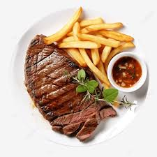

Morar Sozinho
Início
Receitas
Tutoriais
Info
Contato
Entrar
Início
Receitas
Tutoriais
Info
Contato
Entrar

Bife com fritas
Rapido e muito gostoso
(10+)
Ver Mais
Ingredientes:
2 bifes bovinos (o corte de sua preferencia, porém indicamos Acem).
Óleo
1/2 cebola fatiada.
2 dentes de alho.
Sal a gosto.
2 batatas medias.
Modo de Preparo:
Descasque e cozinhe as batatas.
Adicione um fio de óleo em uma frigideira ou panela baixa
Adicione o bife já temperado.
Quando um lado do bife dourar, vire-o e adicione o alho e a cebola e deixe dourar..
Corte as batatas no formato que preferir.
Em uma panela alta, adicione bastante óleo para fritar as batatas.
Assim que os 2 lados dos bifes estiverem dourados e fritos, reserve.
Assim que o óleo estiver quente, coloque as batatas para fritarem.
Quando as batatas dourarem e ficarem crocantes, retire-as do óleo.
Sirva-se.